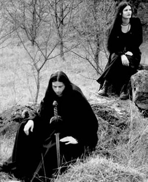

Os chamados "projetos paralelos" não
são raros no universo do Metal; ou seja, integrantes de
bandas consagradas desenvolvem simultaneamente carreiras (de modo
solo ou com parcerias) distintas de sua principal atividade musical.
Também são comuns as variações de
estilos musicais, mas que, de certa forma, trazem uma conexão
entre si. A banda austríaca Dargaard é um bom exemplo.
Fundada
em 1997 pelo músico Tharen (ex integrante das bandas de
Black Metal Abigor e Amestigon) e com a participação
de Elisabeth Toriser (ex integrante de Abigor e Antichrisis),
o Dargaard (nome que faz referência a uma região
amaldiçoada imersa em trevas da série de livros
de fantasia DragonLance) trazia uma proposta musical
bem diferenciada do Black Metal. Algo que pode ser (de um modo
bastante amplo) considerado como Dark Ambient/Atmospheric; ou
Darkwave, Neoclas-sical, Ethereal e até mesmo Gothic ou
Folk.
O som apresentado pela banda é composto
por cordas (como harpas e violinos), piano, instru-mentos de sopro
(flautas), timbres eletrônicos, teclados atmosféricos
e percussões primitivas. No entanto, toda a sonoridade
é obtida através do sintetizador de Tharen; sem
que haja a utilização destes instrumentos propriamente
ditos. E, para completar, a voz suave de Elisabeth, pontuada por
participações dos vocais de Tharen.
As letras em latim e inglês, compostas pelo
próprio Tharen ou obras musicadas do poeta lírico
Quintus Horatius Flaco (65 – 8 a.C), abordam temas místicos,
existenciais e intimistas; além de diversas citações
à culturas antigas. Este conjunto proporciona uma orquestração
suave, eventualmente agressiva e dramática, com referências
medievais e folclóricas, criando ambientes místicos
e introspectivos ao ouvinte.
O próprio Tharen assume que nenhuma outra
banda influencia a musicalidade do Dargaard. No entanto, a descreve
como "canções que radiam um tipo de beleza
(...). É sobre meu próprio reino, e este reino consiste
em forças escuras, magia, misticismo e trevas (...); isto
tem sua própria beleza".
Desse modo e com esta proposta, o primeiro trabalho
foi gravado nos estúdios Hoernix (Áustria)
e lançado pela Napalm Records em outubro de 1998.
Eternity Rites traz dez faixas em pouco mais de quarenta
e sete minutos. Neste trabalho destaca-se Demon Eyes,
Of Broken Stones e Seelenlos. Este disco de
estreia agradou muito a crítica especializada chegando
a ser classificado como majestoso, agressivo,
obscuro e melancólico.
Entre 1998 e 1999, a banda deu continuidade ao
processo criativo de composições e iniciou o trabalho
de gravação do segundo disco. Lançado em
junho de 2000, gravado, mixado e masterizado por Georg Hrauda
e Tharen no estúdio Hoernix, In Nomine Aeternitatis
se estende por mais de cinqüenta minutos e divide-se em onze
faixas. The Infinite traz um arranjo grandioso com sobreposição
de teclados e a voz de Elizabeth levando o ouvinte a uma viagem
surreal. Enquanto The March of the Shadows é um
instrumental repetitivo e melancólico.
In Nomine Aeternitatis é uma
sequência do trabalho anterior, com arranjos e letras de
temática semelhante. No entanto, não soa repetitivo.
Pelo contrário, acrescenta e fortalece a identidade musical
do Dargaard.
No mesmo período, entre 1999 e 2000, a
dupla Elizabeth e Tharen já preparava material para o terceiro
trabalho. Assim, The Dissolution of Eternity foi lançado
em 2001 e completa a trilogia iniciada em 1998 com Eternity
Rites.
O terceiro disco da banda traz dez faixas e soa
mais diversificado que os álbuns anteriores. My Phantasm
Supreme desperta tensão no ouvinte; enquanto A
Prophecy of Immortality (letra de Quintus Horatius Flaco),
traz um arranjo suave que se intensifica no decorrer da música.
Após um período sem novidades,
o Dargaard retorna aos estúdios para a gravação
do quarto álbum de sua carreira. Lançado em março
de 2004, Rise and Fall traz nove faixas que se estendem
por quase uma hora de melancolia e misticismo. Além da
faixa homônima, destaca-se também Bearer of the
Flame, Niobe e a faixa instrumental, bastante percussiva
Takhisis Dance. Ainda, Rise and Fall foi considerado
o álbum do mês pela crítica especializada
Orkus e Sonic Seducer.
Além destes álbuns oficiais, o
Dargaard também integrou algumas coletâneas produzidas
com bandas como Trail of Tears e The
Sins of Thy Beloved. Entretanto, uma característica
interessante de sua carreira, é que o Dargaard, mesmo tendo
um ótimo reconhecimento dentro da cena Dark Ambient/Atmospheric,
não faz apresentações ao vivo. Isto porque,
segundo Tharen, não seria possível recriar a mesma
atmosfera produzida em estúdio.
Atualmente, há apenas boatos sobre um
novo álbum. Em fóruns da Internet e no perfil do
Myspace, o próprio Tharen não fornece com
exatidão qualquer informação a respeito de
um novo trabalho. Desse modo, resta aos ouvintes aguardarem as
novidades e, por enquanto, ouvir e "decifrar" a magia
do Dargaard.
Por
Spectrum
Downloads
Disponíveis: